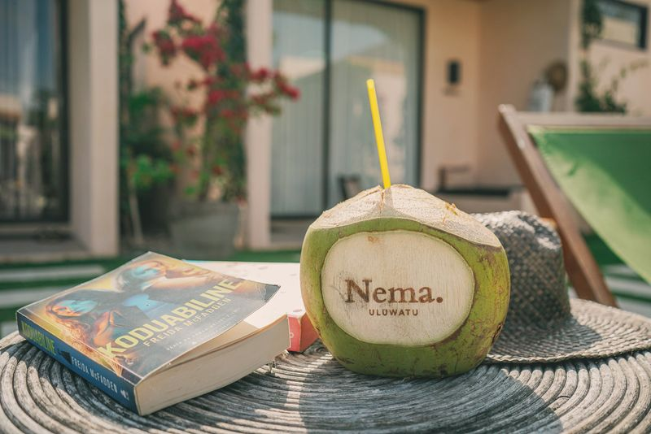

01
The Food Capital of Uluwatu
Nema sits at the heart of Uluwatu's food scene. Some of the area's best restaurants are a few minutes' walk from the gate, and your Nema keyring takes 10–20% off at our partners.
- Kynd CommunityAbout 200m. Famous for its photogenic smoothie bowls and brunch.
- YUKIAbout 400m. Modern Japanese izakaya, sushi and cocktails; a date-night favourite.
- Mood by OursA short walk on Jl. Labuansait. Farm-to-table café and organic market.
- Suka EspressoAbout a 3-minute walk. The local favourite for coffee and a long brunch.
- Osteria LunaCoastal Italian on the Padang Padang strip, from the team behind YUKI.
- TabuSleek and atmospheric, made for a long dinner.